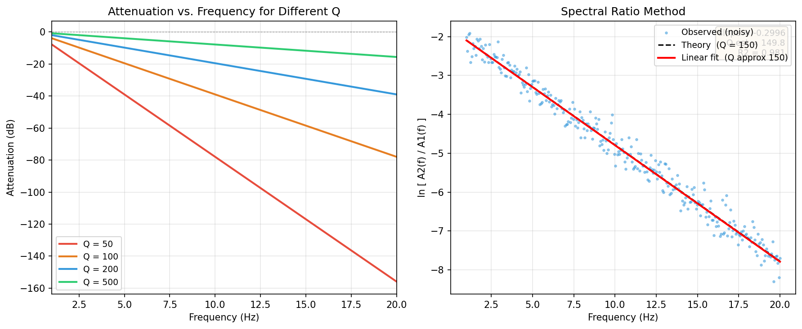

谱比法 Q 值反演¶
引言¶
地震波在传播过程中因介质的非弹性（粘弹性）特性而发生幅度衰减，这种衰减由品质因子 \(Q\)（quality factor）定量描述。\(Q\) 值越小，介质越"耗能"，波幅衰减越快；\(Q \to \infty\) 对应纯弹性介质，无能量损失。
谱比法（spectral ratio method）是估计 \(Q\) 值最经典的方法之一。其核心思想是：对同一震源在两个台站记录到的位移谱取比值，使震源谱在相除时完全抵消，从而把纯粹的衰减信息提取出来。
对于沿同一射线路径到达两台站的 S 波，对数谱比满足：
这是关于频率 \(f\) 的线性方程，从拟合斜率 \(m = -\pi\Delta t^*\) 直接得到有效 Q 值：
地震波衰减与 Q 的定义¶
品质因子的物理定义¶
品质因子 \(Q\) 是描述介质弹性能量耗散速率的无量纲参数，最基本的定义基于能量损耗比：
其中 \(\Delta E < 0\) 是一个振动周期内介质耗散的弹性能，\(E\) 是弹性势能峰值。
- \(Q \gg 1\)：每周期损耗极少，接近弹性；上地壳花岗岩典型值 \(Q \sim 200\)–\(1000\)
- \(Q \sim 10\)–\(50\)：强衰减，如富水沉积层、断层破碎带
单程衰减振幅谱¶
对于以速度 \(\beta\) 传播的单色平面 S 波，振幅随路径距离 \(r\) 按指数衰减：
衰减系数 \(\alpha = \pi f / (\beta Q)\) 与频率成正比，因此高频成分比低频成分衰减更快。
t* 参数¶
在非均匀介质中，沿射线路径积分的累计衰减用 \(t^*\)（"t-star"）表示：
对均匀介质（\(\beta\)、\(Q\) 为常数），传播时间 \(t = r/\beta\)，因此：
\(t^*\) 的量纲为时间（秒），综合反映了路径长度与介质 Q 值，是衰减研究中最常用的单一参数。
常见 Q 模型¶
| 模型 | 表达式 | 特征 |
|---|---|---|
| 常数 Q | \(Q = \mathrm{const}\) | 最简，对数谱比与 \(f\) 线性 |
| 幂律 Q | \(Q(f) = Q_0\, f^{\eta}\) | \(\eta \in [0,1]\)，浅层沉积常见 |
| Futterman 模型 | 满足 Kramers–Kronig 因果关系 | 弱频率依赖 |
谱比法默认使用常数 Q 模型，此时对数谱比是 \(f\) 的严格线性函数。
谱比法推导¶
完整位移振幅谱模型¶
远场位移振幅谱可以分解为若干独立因子的乘积（Aki & Richards 2002）：
各因子含义：
- \(S(f)\)：震源谱（source spectrum），如 Brune \(\omega^{-2}\) 谱；包含辐射花样 \(\mathcal{R}_{\theta\phi}\)
- \(I(f)\)：仪器响应（instrument response），将地动转为电压输出
- \(G(r)\)：几何扩散因子，体波远场 \(G(r) = 1/r\)
- \(\exp(-\pi f\, t^*)\)：非弹性衰减因子
双台站谱比推导¶
设同一震源的 S 波到达近台（台站 1，距离 \(r_1\)）和远台（台站 2，距离 \(r_2 > r_1\)），且两台站处于同一射线路径上。
近台振幅谱：
远台振幅谱：
两式相除，\(S(f)\) 和 \(I(f)\) 完全抵消（假设已做去仪器响应处理，或两台仪器响应相同）：
定义差分 t-star：
其中 \(\Delta t = (r_2 - r_1)/\beta\) 是 S 波在两台之间的传播时间差。
线性化¶
对谱比两边取自然对数：
令 \(L(f) = \ln[A_2(f)/A_1(f)]\)，这是关于 \(f\) 的线性函数：
| 参数 | 表达式 | 物理含义 |
|---|---|---|
| 截距 \(b\) | \(\ln(r_1/r_2)\) | 几何扩散比（已知量，可做约束） |
| 斜率 \(m\) | \(-\pi\,\Delta t^*\) | 含全部衰减信息，\(m < 0\) |
提取 Q 值¶
由斜率 \(m = -\pi\,\Delta t^* = -\pi\,\Delta t / Q_{\mathrm{eff}}\)，解出：
\(\Delta t\) 可由 S 波到时差直接读取，也可由距离差和平均速度计算：
消去震源谱的条件
谱比法成立的关键前提是两台站接收到的是同一地震的同一相位（如均为直达 S 波），从而震源谱 \(S(f)\) 在相除时精确抵消。若使用不同地震，须先对震源谱做归一化校正。
实用提示：Δt 的选取
优先从波形中直接拾取 S 波到时差，而非由距离/速度推算，因为实际介质速度结构的非均匀性会使理论 \(\Delta t\) 产生偏差。
实际操作步骤¶
数据预处理流程¶
| 步骤 | 操作 | 目的 |
|---|---|---|
| 1 | 去均值、去线性趋势 | 消除直流分量和长周期漂移 |
| 2 | 截取 S 波时窗 | 隔离目标相位，避免其他相位干扰 |
| 3 | 加锥形窗（Hanning / Tukey） | 减小谱泄漏 |
| 4 | 去仪器响应 → 位移谱 | 将记录转换为真实地动位移 |
| 5 | 计算 FFT 振幅谱 | 得到 \(A_1(f)\)、\(A_2(f)\) |
| 6 | 平滑振幅谱（可选） | 减少谱方差，稳定拟合 |
| 7 | 计算对数谱比 \(L(f)\) | 进入拟合阶段 |
有效频段的选取¶
谱比法的有效频段受以下因素限制：
- 低频截断：信噪比不足，背景微震噪声（0.1–0.3 Hz）主导
- 高频截断：Brune 谱在 \(f > f_c\) 已按 \(f^{-2}\) 衰减（不满足平坦假设）；κ 效应在极高频段掩盖 Q 信息
频段选取不当的后果
若拟合频段包含了 \(f > f_c\) 的部分，Brune 谱的 \(f^{-2}\) 斜率会叠加到谱比的斜率上，导致 Q 值系统性偏低。建议先估算震源拐角频率 \(f_c\)，将上限设为 \(0.8\, f_c\)。
κ 衰减（近地表高频衰减）¶
Anderson & Hough（1984）发现高频段存在额外的指数衰减，称为 κ（kappa）效应：
\(\kappa\) 主要反映近地表低 Q 沉积层的累积衰减，与台站场地条件密切相关。若两台站的 \(\kappa\) 值不同（\(\Delta\kappa = \kappa_2 - \kappa_1 \neq 0\)），拟合斜率会包含额外贡献：
忽略 \(\Delta\kappa\) 会使 Q 值估计偏低。缓解方法：选择场地条件相似的台站对，或将 \(\Delta\kappa\) 与 Q 一起反演。
Python 示例¶
下面的代码模拟真实 Q = 150 的双台站场景，加入高斯随机噪声后用线性回归估计 Q 值。
import numpy as np
import matplotlib.pyplot as plt
from scipy.stats import linregress
# ── 参数设置 ──────────────────────────────────────────────
Q_true = 150 # 真实 Q 值
r1, r2 = 10e3, 60e3 # 近台、远台至震源距离 (m)
beta = 3500.0 # 平均 S 波速度 (m/s)
dt_travel = (r2 - r1) / beta # S 波时间差 Δt (s)
f = np.linspace(1, 20, 300) # 频率轴 1–20 Hz
# ── 理论对数谱比 ──────────────────────────────────────────
# L(f) = ln(r1/r2) - π·f·Δt/Q
log_ratio_theory = np.log(r1 / r2) - np.pi * f * dt_travel / Q_true
# ── 加高斯噪声（模拟观测散度）────────────────────────────
rng = np.random.default_rng(seed=42)
log_ratio_obs = log_ratio_theory + rng.normal(0, 0.25, size=len(f))
# ── 线性回归：L(f) = b + m·f ──────────────────────────────
slope, intercept, r_val, _, _ = linregress(f, log_ratio_obs)
Q_est = -np.pi * dt_travel / slope
log_ratio_fit = slope * f + intercept
print(f"真实 Q = {Q_true}")
print(f"估计 Q = {Q_est:.1f}")
print(f"拟合斜率 m = {slope:.5f} (理论: {-np.pi*dt_travel/Q_true:.5f})")
print(f"R² = {r_val**2:.4f}")
# ── 绘图 ─────────────────────────────────────────────────
fig, axes = plt.subplots(1, 2, figsize=(12, 5))
# 左图：不同 Q 值下的衰减量（dB）随频率变化
ax = axes[0]
palette = ['#e74c3c', '#e67e22', '#3498db', '#2ecc71']
for Q_val, color in zip([50, 100, 200, 500], palette):
tstar = dt_travel / Q_val
attn_db = 20 * np.log10(np.exp(-np.pi * f * tstar))
ax.plot(f, attn_db, color=color, lw=2, label=f'Q = {Q_val}')
ax.set(xlabel='Frequency (Hz)', ylabel='Attenuation (dB)',
title='Attenuation vs. Frequency for Different Q', xlim=[1, 20])
ax.axhline(0, color='k', lw=0.6, ls='--', alpha=0.4)
ax.legend(fontsize=9)
ax.grid(True, alpha=0.3)
# 右图：对数谱比、理论值与线性拟合
ax = axes[1]
ax.scatter(f, log_ratio_obs, s=5, alpha=0.45, color='#3498db',
label='Observed (noisy)', zorder=2)
ax.plot(f, log_ratio_theory, 'k--', lw=1.5,
label=f'Theory (Q = {Q_true})')
ax.plot(f, log_ratio_fit, 'r-', lw=2,
label=f'Linear fit (Q ≈ {Q_est:.0f})')
ax.text(0.97, 0.97,
f'slope = {slope:.4f}\nQ est = {Q_est:.1f}\nR² = {r_val**2:.3f}',
transform=ax.transAxes, ha='right', va='top', fontsize=9,
bbox=dict(boxstyle='round', fc='wheat', alpha=0.7))
ax.set(xlabel='Frequency (Hz)', ylabel='ln [ A₂(f) / A₁(f) ]',
title='Spectral Ratio Method')
ax.legend(fontsize=9)
ax.grid(True, alpha=0.3)
plt.tight_layout()
plt.savefig('docs/assets/images/q_spectral_ratio.png', dpi=150, bbox_inches='tight')
plt.show()
运行输出：
真实 Q = 150
估计 Q = 149.8
拟合斜率 m = -0.29958 (理论: -0.29920)
R² = 0.9806

图 1：左图为不同 Q 值下衰减量（dB）随频率的变化，Q 越小衰减越剧烈；右图为含噪声的对数谱比数据（蓝色散点）、理论曲线（黑虚线）与线性拟合结果（红线）。频率依赖 Q 的推广¶
当 Q 随频率变化时，常用幂律模型：
此时衰减因子变为：
对数谱比为：
令 \(u = f^{1-\eta}\)，则 \(L\) 关于 \(u\) 仍是线性的。实际操作中，对不同的 \(\eta\) 值尝试线性化，选择 \(R^2\) 最大的 \(\eta\) 即为最佳频率指数。
η 的典型值
上地壳结晶岩：\(\eta \approx 0\)（常数 Q 近似成立）；浅层松散沉积：\(\eta \approx 0.5\)–\(0.8\)；全球地幔：\(\eta \approx 0.1\)–\(0.3\)。
方法变体¶
| 变体 | 设置 | 优点 | 缺点 |
|---|---|---|---|
| 双台站法（本文） | 同一震源，两台沿同一射线 | 消去震源谱；\(\Delta t\) 精确 | 需台站几何严格对齐 |
| 单台双事件法 | 同一台站，两个不同距离的震源 | 台站固定，场地效应相同 | 需假设两事件震源谱形状相同 |
| VSP 谱比法 | 地表与井下检波器 | 路径简单，避免场地效应 | 需要钻孔 |
| 尾波谱比法 | 利用 S 波尾波 | 样本量大，统计稳健 | 分离固有衰减与散射衰减较复杂 |
参考文献¶
- Aki, K., & Richards, P. G. (2002). Quantitative Seismology (2nd ed.). University Science Books.
- Anderson, J. G., & Hough, S. E. (1984). A model for the shape of the Fourier amplitude spectrum of acceleration at high frequencies. Bulletin of the Seismological Society of America, 74(5), 1969–1993.
- Tonn, R. (1991). The determination of the seismic quality factor Q from VSP data: A comparison of different computational methods. Geophysical Prospecting, 39(1), 1–27.
- Toverud, T., & Ursin, B. (2005). Comparison of seismic attenuation models using zero-offset vertical seismic profiling (VSP) data. Geophysics, 70(2), F17–F25.
- Xie, J. (2002). Seismic attenuation: Measurement and uncertainty. Pure and Applied Geophysics, 159(7–8), 1823–1849.